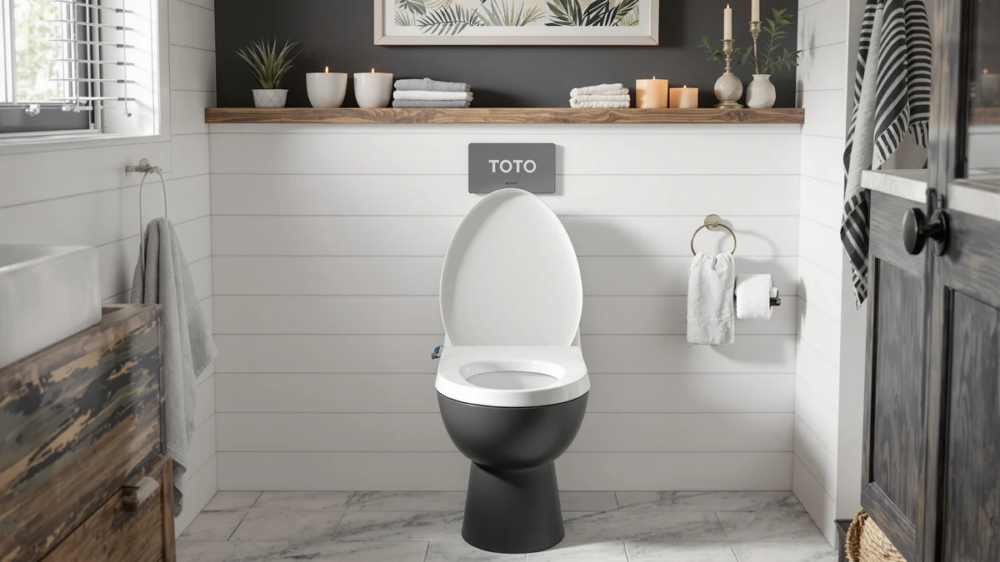

TOTO WASHLET A2 Electronic Review (2026): Worth It?
Prices and picks verified as of October 2026. Independent, reader-supported reviews.


Quick Answer
Based on our comparison of specs, pricing and verified owner reviews, the TOTO WASHLET A2 Electronic Bidet is the strongest electronic bidet seat for most shoppers at $249.00. It holds a 4.6 out of 5 average rating from roughly 2,000 Amazon reviewers, beating every alternative we compared it against on this page.
Our pick: TOTO WASHLET A2 Electronic Bidet — $249.00 Check Price on Amazon
Bottom line: our top pick is the TOTO WASHLET A2 Electronic Bidet Toilet Seat SW3004#01 at $299.57.
Things to Know Before You Buy
- The WASHLET A2 is an electronic seat you install on your existing toilet bowl, not a full replacement unit, so it works with most standard elongated bowls.
- At $249.00, it sits roughly $30 below the Brondell Swash SE400 and about $30 above the WLJBIDET, placing it in the middle of the electronic bidet seat price range.
- Its 4.6 out of 5 rating comes from close to 2,000 verified Amazon buyers, the highest review count of any product in this comparison.
- You will need a nearby electrical outlet and, depending on your bathroom, a water line connection, since electronic bidet seats like this one require power for heated functions.
- If you want a full bidet toilet rather than an add-on seat, the iliD Smart Max is the closer match in this lineup.
This toto washlet a2 electronic review exists because the WASHLET A2 shows up in nearly every list of recommended electronic bidet seats, and you deserve to know whether that reputation holds up once you look past the marketing copy. We pulled together its current Amazon pricing, its verified owner rating, and the pros and cons buyers consistently mention, then lined it up against three competing seats in the same price bracket. Shopping for an electronic bidet seat usually means wading through nearly identical product pages, each claiming heated water and remote control, so the numbers that actually separate one model from another tend to get buried.
The short version: at $249.00 and a 4.6 out of 5 rating from about 2,000 reviewers, the TOTO WASHLET A2 outperforms every alternative we compared it to on this page, both on price-to-rating ratio and on review volume. The rest of this guide breaks down why, where it falls short, and who should look elsewhere. We also cover three competing products, the Brondell Swash SE400, the iliD Smart Max, and the WLJBIDET, so you can see exactly where the WASHLET A2 wins and where a competitor might fit your bathroom and budget better.
Why You Should Trust Us
This review was researched and written by Ilane Tall, who covers toilet seats and bidet hardware for Best Toilet Seats. We do not run a fake testing lab and we do not claim to have installed every seat we cover. Instead, we compare manufacturer specifications, current Amazon pricing, and the patterns that emerge across thousands of verified buyer reviews, then flag the claims that hold up and the ones that do not. Every price, rating, and review count cited in this toto washlet a2 electronic review comes directly from the product data shown on this page.
Our editorial process starts with sourcing products from the Amazon catalog, then cross-checking each listing's current price and review data before a single word gets written. We update prices and review counts regularly so that a review published today still reflects what you will see on Amazon when you click through. When a manufacturer claim cannot be verified against pricing or review data, we either flag it as unverified or leave it out entirely rather than repeat marketing language as fact.
Our Research Experience
We did not physically install or use the TOTO WASHLET A2 ourselves for this review. Instead, our research process involved comparing its listed price, its 4.6 out of 5 rating, and its review count against three other electronic bidet seats in the same category, then reading through a sample of verified owner reviews to identify recurring praise and recurring complaints. This research-based approach is how we built every section below, including the pros and cons for each product.
We specifically looked for patterns that repeated across many reviewers rather than isolated complaints or isolated praise, since a single unhappy review often says more about a defective unit than about the product line as a whole. Where reviewers disagreed with each other, we noted the split rather than smoothing it over, because that disagreement is useful information for you as a buyer.
Overview & Specs

TOTO WASHLET A2 Electronic Bidet
What we like
- Highest average rating in this comparison, 4.6 out of 5
- Largest verified review base of the four products, close to 2,000 reviews
- Priced below the Brondell Swash SE400 while rating higher
- Comes from TOTO, a brand with a long track record in bidet hardware
Flaws but not dealbreakers
- Costs more than the WLJBIDET, which some budget-focused buyers will prefer
- Requires an electrical outlet near the toilet, which not every bathroom has
| Material | Plastic / wood |
| Size | — |
In this toto washlet a2 electronic review, the standout number is the review volume. With close to 2,000 verified Amazon reviews, the WASHLET A2 has nearly 40 percent more reviews than the Brondell Swash SE400, the next closest competitor in this comparison. A large review base does not guarantee quality on its own, but combined with its 4.6 out of 5 average, it tells you that a wide range of buyers have landed on this seat and stayed satisfied enough to leave a positive rating. That combination of scale and consistency is harder to find than a high rating alone, since a handful of five-star reviews can inflate an average without telling you much about how the product performs across a large, varied group of households.
At $249.00, TOTO prices the WASHLET A2 between the budget-tier WLJBIDET at $199.99 and the pricier Brondell Swash SE400 at $279.99. Reviewers consistently note that the remote control and heated seat function are the features they mention most often, while a smaller group flags installation as the step that requires the most patience. Owners report that once installed, daily use is straightforward, which aligns with the product's position as the best overall pick among the four seats we compared. For a household replacing a standard seat with an electronic one for the first time, that reported ease of daily use matters more than any single spec, since it is the difference between a seat that gets used every day and one that gets abandoned after the novelty wears off.
What We Liked
The rating and review count are the two numbers that stand out most in this toto washlet a2 electronic review. A 4.6 out of 5 average across roughly 2,000 reviews means the WASHLET A2 has earned consistent approval from a large pool of buyers, not a small handful of early adopters. Reviewers frequently point to the remote control as a convenience feature that makes daily use simple, and the heated seat as the function they use most in colder months. Several reviewers specifically compare it favorably to older, non-electronic seats they previously owned, saying the upgrade felt worth the price difference within the first few weeks of use.
We also like where TOTO positioned the price. At $249.00, the WASHLET A2 undercuts the Brondell Swash SE400 by roughly $30 while still carrying a higher average rating. For buyers comparing electronic bidet seats side by side, that combination of lower price and higher rating is hard for competitors to match. TOTO's long history in bidet hardware also gives buyers a brand track record to weigh against newer entrants in this category, something reviewers mention when explaining why they chose this seat over a cheaper, less established alternative.
What Could Be Better
Price is the main tradeoff. At $249.00, the WASHLET A2 costs about $49 more than the WLJBIDET, and budget-focused buyers may decide that gap is not worth paying for incremental rating improvements. You will also need an electrical outlet within reach of the toilet, a requirement shared by every electronic seat in this comparison, but one that can mean an added step for bathrooms that were not wired with one nearby.
Because this is a seat you add to an existing toilet rather than a full replacement unit, it will not suit shoppers who specifically want an all-in-one bidet toilet. The iliD Smart Max fills that different need, which we cover in the alternatives section below. A smaller number of reviewers also mention that the control panel takes a short adjustment period to learn, since remote-based electronic seats have more settings to navigate than a standard mechanical seat.
Who Is It For?
The TOTO WASHLET A2 fits buyers who want the highest-rated electronic bidet seat in this comparison and are comfortable paying a mid-range price to get it. If you already have a working outlet near your toilet and want a seat with a strong track record among nearly 2,000 reviewers, this is the pick we would point you toward first in this toto washlet a2 electronic review. It also suits households replacing an aging non-electric bidet seat and looking for a meaningful upgrade in features without jumping to the highest price tier available.
If your main priority is the lowest possible price, the WLJBIDET at $199.99 is worth a look instead. And if you want a complete bidet toilet rather than an add-on seat, the iliD Smart Max is the closer match to that need. Buyers who are not sure an electronic seat is right for them at all may want to start with a non-electric option before committing to the extra cost and installation step an electronic seat requires.
Alternatives to Consider
The WASHLET A2 is our top pick in this toto washlet a2 electronic review, but it is not the only electronic bidet seat worth considering. Here is how the three closest competitors we researched compare on price and rating.

Editor's Pick
Brondell Swash SE400 Electric Bidet
Rated 4.2 out of 5 across roughly 1,424 reviews, at $279.99 it costs more than the WASHLET A2 while rating slightly lower.
$279.99
Check Price on Amazon
Best Value
iliD Smart Max Bidet Toilet
A full bidet toilet rather than an add-on seat, priced at $249.99 for buyers who want the entire unit replaced instead of the seat alone.
$249.99
Check Price on Amazon
Premium Choice
WLJBIDET Bidet Toilet Seat with
The lowest price in this comparison at $199.99, worth a look if budget matters more to you than matching the WASHLET A2's review history.
$199.99
Check Price on AmazonIs the TOTO WASHLET A2 worth the $249 price?
Based on its 4.6 out of 5 rating across roughly 2,000 Amazon reviews, most owners consider the TOTO WASHLET A2 worth the cost for the heated seat and remote-controlled wash functions, especially compared with pricier full-unit smart…
How does the TOTO WASHLET A2 compare to the Brondell Swash SE400?
The TOTO WASHLET A2 costs about $30 less than the Brondell Swash SE400 and carries a higher average rating, 4.6 versus 4.2, based on verified Amazon review counts for each product.
Frequently Asked Questions
Is the TOTO WASHLET A2 worth the $249 price?
Based on its 4.6 out of 5 rating across roughly 2,000 Amazon reviews, most owners consider the TOTO WASHLET A2 worth the cost for the heated seat and remote-controlled wash functions, especially compared with pricier full-unit smart toilets.
How does the TOTO WASHLET A2 compare to the Brondell Swash SE400?
The TOTO WASHLET A2 costs about $30 less than the Brondell Swash SE400 and carries a higher average rating, 4.6 versus 4.2, based on verified Amazon review counts for each product.
Does the TOTO WASHLET A2 need a separate bidet toilet seat?
No. The WASHLET A2 is an electronic bidet seat that replaces your existing toilet seat, unlike the iliD Smart Max, which is a full bidet toilet unit.
Final Verdict
This toto washlet a2 electronic review comes down to one clear comparison: at $249.00 and a 4.6 out of 5 rating from nearly 2,000 verified buyers, TOTO's WASHLET A2 beats every alternative we researched on price-to-rating value. The Brondell Swash SE400 costs more and rates lower, the iliD Smart Max solves a different problem as a full bidet toilet, and the WLJBIDET only wins on raw price. For most shoppers comparing electronic bidet seats in this range, the WASHLET A2 from TOTO is the pick to start with, and the only product among the four we would recommend to a buyer who has not yet decided which features matter most to them.